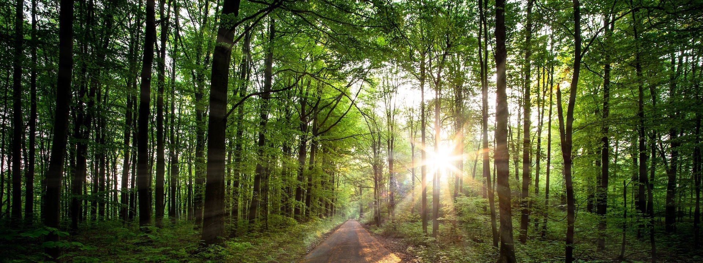

Места отдыха
- Коттеджи
- Базы отдыха
- Пансионаты
- Санатории
- Отели
- Горнолыжные курорты
Отдых в лесу
Знаете, чем хорош отдых в лесу?
Тем, что в городе нам недоступно.
Нельзя вдохнуть чистый лесной воздух и сорвать первый предосенний гриб, нельзя ловить рыбу в чистом озере на зорьке в тишине, нельзя смотреть на звездное небо.
Тогда прочь из дымно-выхлопного города! А мы, туристическая фирма «Вокруг света», готовы вам помочь.
База отдыха в лесу: чем хорош отдых в отсутствие цивилизации?
Грибники и ягодники соберут не одно лукошко в сезон этих даров леса, и на зиму заготовят, и на костре приготовят.
Сегодня нам охотиться не надо, чтобы прокормить себя и семью, но инстинкт-то остался! Отдых на выходные в лесу, проведенный с ружьем или карабином, даст заряд бодрости и здоровья, а если вы фотоохотник, то и отличные снимки.
Здесь особая энергетика, которую лес с радостью отдаст вам. Занятия спортом точно эффективнее, чем на городских спортплощадках. В лесу вы можете слушать тишину, нарушаемую только шумом высоких деревьев, одновременно далеким и мощным, и дышать чистым воздухом.
Ничего нет вкуснее, чем обед или ужин, приготовленный из собственной добычи на мангале или костре с настоящим дымком, в компании друзей под веселую шутку и душевный разговор, негромкий звук гитары или танцы до упаду!
Чем мы вам можем помочь?
Наша фирма представляет более 100 объектов отдыха.
Базы отдыха в лесу разные: от премиум- до эконом-класса. Мы подберем вам место в соответствии с вашим бюджетом и запросами.
Мы сбережем вам время, деньги и хорошее настроение, избавив от возможного мошенничества. Психология продаж проста: владелец хочет выгодно продать, поэтому может преувеличить достоинства предложения, а вы по приезде столкнетесь с минимумом удобств или другими претендентами на ваше место. Итог – безнадежно испорченные выходные, а отдых на природе опять отодвинется на неопределённый срок.
У нас есть разные способы оплаты: картами MasterCard и Visa, наличным переводом через Сбербанк и безналичным переводом, что значительно упростит процедуру покупки, в отличие от самостоятельных расчетов с владельцами.